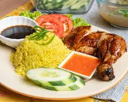

Nasi Ayam
🍛 A Comfort Dish Close to My Heart
Nasi Ayam, or Malay-style chicken rice, is more than just a meal — it’s a nostalgic dish wrapped in steam and the warmth of home. I remember walking into my grandmother’s kitchen on lazy Sunday afternoons, the air thick with the aroma of garlic, ginger, and pandan leaves. She never measured anything — just instincts and years of love guiding her hands.
This recipe is a humble tribute to those weekends and all the times we gathered around the table, fighting over who got the drumstick.

📝 Ingredients
🍗 For the Chicken
- 1 whole chicken (about 1.5kg)
- 3 slices of ginger
- 3 cloves garlic
- 1 stalk spring onion
- Salt, to taste
🍚 For the Rice
- 2 cups jasmine rice (washed and drained)
- 3 cloves garlic (minced)
- 2 slices ginger
- 2 pandan leaves, tied into a knot
- 2 tbsp chicken fat or vegetable oil
- 2.5 cups chicken broth (from boiling the chicken)
- Salt, to taste
🍲 For the Soup
- Leftover chicken stock
- A few slices of carrot
- Salt and pepper, to taste
- Fried shallots and spring onions (for garnish)
🌶️ For the Chili Sauce
- 4 red chilies
- 3 cloves garlic
- 1-inch ginger
- 2 tbsp chicken broth
- 1 tsp sugar
- 1 tbsp lime juice
- Salt, to taste
🍴 Instructions
1. Boil the Chicken
- In a large pot, bring water to a boil.
- Add ginger slices, garlic, and spring onion.
- Gently lower the chicken in and boil for about 30–40 minutes until fully cooked.
- Remove the chicken, brush it with sesame oil, and set aside.
- Reserve the broth — you’ll use it for both the rice and soup.
Anecdote: When I made this in university for the first time, I forgot to reserve the broth and poured it out. I had to redo the chicken all over again — I never made that mistake again.
2. Cook the Rice
- In a pot or rice cooker, heat the chicken fat or oil.
- Sauté garlic and ginger until fragrant.
- Add pandan leaves and drained rice. Stir for a minute.
- Add the chicken broth and a pinch of salt.
- Cook until the rice is fluffy and fragrant.
Pro tip: My auntie swears by adding a tiny splash of evaporated milk into the rice to make it creamier — I still do this secretly.
3. Make the Soup
- Bring the reserved broth to a gentle simmer.
- Add carrots, salt, and pepper.
- Let it boil until carrots are tender.
- Top with fried shallots and spring onions.
4. Blend the Chili Sauce
- Blend all chili sauce ingredients until smooth.
- Adjust with lime juice or broth depending on how tangy or runny you want it.
Memory lane: My cousin once used bird’s eye chilies instead — we all cried halfway through dinner but couldn’t stop eating.
🍽️ Serving Suggestions
- Plate the rice using a small bowl mold.
- Slice the chicken and arrange neatly beside the rice.
- Drizzle light soy sauce over the chicken.
- Serve with the soup, chili sauce, and fresh cucumber slices.
🧡 Final Thoughts
Nasi Ayam isn’t just a dish — it’s a memory, a hug, and a flavor bomb all in one. Every household has its own twist, so make this your own. And remember: even if the rice is a little mushy or the chicken a bit dry, it’ll still taste better with stories around the table.